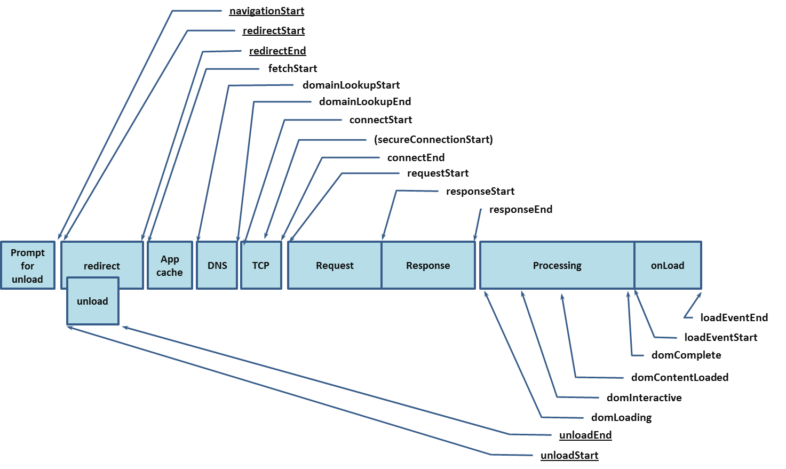

Ce document est la traduction en français de la Recommandation du W3C
portant sur la Mesure des durées de Navigation (17 Décembre 2012).
Cette recommandation est une version traduite qui peut comporter des
erreurs. La seule version normative et originale est la version
anglaise, qui se trouve à : http://www.w3.org/TR/navigation-timing/.
Résumé
Cette spécification définit une interface pour les applications Web afin
d'accéder à des informations de mesure de durée en lien avec la navigation
et les éléments.
Statut de ce
document
Ce chapitre décrit le statut de ce document au moment de sa
publication. D'autres documents pourront remplacer ce document. Une liste
des publications courantes du W3C et les dernières révisions de ce rapport
technique peuvent être trouvées dans l'index
des rapports techniques du W3C à l'adresse http://www.w3.org/TR/.
Ceci est la Recommandation du W3C pour la "Spécification de Mesure des durées de Navigation". Un rapport d'implémentation, produit au cours de la phase de Recommandation Candidate, en 2012, est disponible. Il s'appuie sur la suite de tests de Mesure des durées de Navigation.
Merci d'envoyer les commentaires
à public-web-perf@w3.org
(archive)
avec [NavigationTiming] au début de la ligne de sujet.
Ce document est produit par le Groupe de Travail
Performance Web.
Un document des différences avec le brouillon précédent est disponible.
Ce document a été revu par des membres du W3C, par des développeurs de
logiciels, et par d'autres groupes du W3C et les tiers concernés, et a été
approuvé par le Directeur comme Recommandation du W3C. C'est un document
stable qui peut être utilisé comme document de référence ou cité par
un autre document. Le rôle du W3C, en produisant cette recommandation, est
de mettre en lumière la spécification et d'en promouvoir le plus large
déploiement. Ceci permet d'améliorer le fonctionnement et l'interopérabilité
du Web.
Ce document a été produit par un groupe agissant sous couvert de la
politique de
brevets du W3C du 5 février 2004. Le W3C maintient une
liste publique des
divulgations de brevets faites en lien avec les produits livrables du
groupe; cette page contient également des instructions pour divulguer un
brevet. Quiconque aurait connaissance d'un brevet dont il pense qu'il
contient des Revendication(s)
Essentielle(s) doit divulguer cette information conformément à la
section
6 de la Politique de Brevets du W3C.
Contenu
- 1
Introduction
- 2
Exigences de conformité
- 3 Terminologie
- 4 Mesure de durées de Navigation
- 4.1 Introduction
- 4.2 L'interface
PerformanceTiming
- 4.3 L'interface
PerformanceNavigation
- 4.4 L'attribut
window.performance
- 5 Traitement
- 5.1 Modèle de traitement
- 5.2 Récupération de mémoire
- 5.3 L'Horloge Monotone
- 5.4 Préfixes de fournisseurs
- 6 Données privées
- 6.1 Divulgation d'informations
- 6.2 Accès inter-dossiers
- 7 Sécurité
- 7.1 Détection de serveurs proxy
- 7.2 Falsification en remplaçant les objets de mesure de durée
- 8 Références
- 8.1 Références Normatives
- 8.2 Références Informatives
- Remerciements
1 Introduction
Cette section n'est pas normative.
La latence utilisateur est un indicateur important de la qualité des
Applications Web. Même si les mécanismes basés sur des scripts, comme ceux décrits dans
[JSMEASURE], peuvent
constituer une instrumentation complète pour mesurer la latence utilisateur
au sein d'une application, ils sont dans de nombreux cas incapables de fournir
une vision complètement globale de la latence.
Par exemple, le script suivant montre une tentative naïve pour
mesurer le temps pris pour charger entièrement une page :
<html>
<head>
<script type="text/javascript">
var start = new Date().getTime();
function onLoad() {
var now = new Date().getTime();
var latency = now - start;
alert("temps de chargement de la page : " + latency);
}
</script>
</head>
<body onload="onLoad()">
<!- Le corps de la page commence ici. -->
</body>
</html>
Ce script calcule la durée écoulée pour charger la page après que
le premier bit de JavaScript dans la section head est exécuté, mais il ne
donne aucune information au sujet de la durée pour recevoir la page du serveur.
Afin de répondre au besoin d'une information complète au sujet de
l'expérience utilisateur, ce document introduit les interfaces
PerformanceTiming. Cette interface
permet aux mécanismes JavaScript de fournir au sein des applications des
mesures de latence complètes et effectuées côté client. Avec l'interface
proposée, l'exemple précédent peut être modifié afin de mesurer le temps de
chargement de la page tel que perçu par l'utilisateur.
Le script suivant calcule la durée nécessaire au chargement de la page
depuis l'action de navigation la plus récente.
<html>
<head>
<script type="text/javascript">
function onLoad() {
var now = new Date().getTime();
var page_load_time = now - performance.timing.navigationStart;
alert("Temps de chargement de la page perçu par l'utilisateur: " + page_load_time);
}
</script>
</head>
<body onload="onLoad()">
<!- Le corps de la page commence ici. -->
</body>
</html>
L'interface fournie par ce travail n'est pas conçue dans l'objectif d'être
utilisée comme un quelconque type de suite de test pour agents utilisateurs.
Tous les diagrammes, exemples, et notes dans cette specification sont non-normatifs,
de même que toutes les sections explicitement marquées comme non-normatives.
Tout le reste dans cette spécification est normatif.
Les mots-clés « DOI(VEN)T », « NE DOI(VEN)T PAS », « REQUIS », « DEVRAIT »,
« NE DEVRAIT PAS », « RECOMMANDÉ », « PEUT » et « OPTIONNEL » dans les parties
normatives de ce document doivent s'interpréter comme décrit dans le
document RFC 2119. Pour des raisons de lisibilité, ces
mots n'apparaissent pas intégralement en lettres majuscules dans cette spécification.
Les exigences formulées à l'impératif dans le cadre d'algorithmes (comme
"retirer tout caractère blanc en début de chaîne" ou "retourner faux et annuler
ces étapes") doivent être interprétées selon la signification du mot-clé utilisé
dans l'introduction de l'algorithme ("doit", "devrait", "peut", etc.).
Certaines exigences de conformité sont rédigées comme des exigences sur les
attributs, les méthodes ou les objets. De telles exigences doivent être interprétées
comme des exigences portant sur les agents utilisateurs.
Les exigences de conformité formulées sous forme d'algorithmes ou d'étapes
spécifiques peuvent être mises en œuvre de quelque manière que ce soit, pourvu
que le résultat final est équivalent. (En particulier, les algorithmes définis
dans cette spécification sont destinés à être faciles à suivre, et ne sont pas
destinés à être performants.)
Les fragments IDL dans cette spécification doivent être interprétés
comme nécessaires pour des fragments IDL conformes, tel que décrit
dans la spécification Web IDL. [Web IDL]
3 Terminologie
La formule "un objet Foo", dans laquelle Foo est en fait une interface, est parfois utilisée à la place
de l'expression plus exacte "un objet qui implémente l'interface Foo".
Le terme "navigation" fait référence au fait de
naviguer.
Le terme "JavaScript" étant plus largement connu, il est utilisé à la place
du terme officiel ECMAScript pour faire référence à
l'ECMA-262.
Tout au long de ce travail, le temps est mesuré en millisecondes
depuis minuit du 1er Janvier 1970 (UTC). Veuillez noter que la spécifiation de Mesure de Durée de Navigation 2 [Navigation Timing 2]
donne accès aux informations de mesure de durée liées à la navigation en proposant plutôt
une résolution infèrieure à la milliseconde.
4 Mesure de durées de Navigation
4.1 Introduction
Cette section n'est pas normative.
Cette spécification introduit une interface qui fournit aux applications Web
des informations en lien avec la mesure de durées. Cette spécification ne
couvre pas la manière dont les applications Web tirent partie de ces
interfaces afin de collecter, stocker et analyser les informations fournies.
4.2 L'interface PerformanceTiming
interface PerformanceTiming {
readonly attribute unsigned long long navigationStart;
readonly attribute unsigned long long unloadEventStart;
readonly attribute unsigned long long unloadEventEnd;
readonly attribute unsigned long long redirectStart;
readonly attribute unsigned long long redirectEnd;
readonly attribute unsigned long long fetchStart;
readonly attribute unsigned long long domainLookupStart;
readonly attribute unsigned long long domainLookupEnd;
readonly attribute unsigned long long connectStart;
readonly attribute unsigned long long connectEnd;
readonly attribute unsigned long long secureConnectionStart;
readonly attribute unsigned long long requestStart;
readonly attribute unsigned long long responseStart;
readonly attribute unsigned long long responseEnd;
readonly attribute unsigned long long domLoading;
readonly attribute unsigned long long domInteractive;
readonly attribute unsigned long long domContentLoadedEventStart;
readonly attribute unsigned long long domContentLoadedEventEnd;
readonly attribute unsigned long long domComplete;
readonly attribute unsigned long long loadEventStart;
readonly attribute unsigned long long loadEventEnd;
};
Attribut navigationStart
Cet attribut doit retourner l'heure immédiatement après que l'agent
utilisateur a fini d'inviter
à décharger le document précédent. S'il n'y a pas de document précédent, cet
attribut doit retourner la même valeur que fetchStart.
Attribut unloadEventStart
Si le document précédent et le document courant ont la même
origine
[IETF RFC 6454],
cet attribut doit retourner l'heure immédiatement avant que l'agent utilisateur
ne démarre l'événement
unload
du document précédent.
S'il n' y a pas de document précédent ou si le document précédent a une autre
origine que le
document courant, cet attribut doit retourner zéro.
Attribut unloadEventEnd
Si le document précédent et le document courant ont la
même origine,
cet attribut doit retourner l'heure immédiatement après que l'agent utilisateur
a terminé l'événement
unload
du document précédent. S'il n' y a pas de document précédent ou si le document
précédent a une autre
origine que le
document courant ou si le déchargement n'est pas encore achevé, cet attribut
doit retourner zéro.
S'il y a des redirections HTTP
ou équivalentes
lors de la navigation et qu'elles n'ont pas toutes la
même origine,
unloadEventStart et
unloadEventEnd doivent tous deux retourner zéro.
Attribut redirectStart
S'il y a des redirections HTTP
ou équivalentes
lors de la navigation et qu'elles ont toutes la
même origine,
cet attribut doit retourner l'heure de début de la
requête qui initie la redirection. Sinon, l'attribut doit retourner zéro.
Attribut redirectEnd
S'il y a des redirections HTTP
ou équivalentes
lors de la navigation et qu'elles ont toutes la
même origine,
cet attribut doit retourner l'heure immédiatement après avoir reçu le dernier
octet de la réponse de la dernière redirection. Sinon, l'attribut doit retourner zéro.
Attribut fetchStart
Si la nouvelle ressource doit être
récupérée en utilisant la méthode HTTP GET
ou
un équivalent, fetchStart doit retourner l'heure immédiatement avant que
l'agent utilisateur ait commencé à vérifier
tout cache applicatif pertinent. Sinon, fetchStart doit retourner l'heure à laquelle
l'agent utilisateur commence à
récupérer la ressource.
Attribut domainLookupStart
Cet attribut doit retourner l'heure immédiatement avant que l'agent utilisateur
commence la recherche du nom de domaine pour le document courant.
Si une connexion persistante [RFC 2616] est utilisée, ou si le document
courant est extrait de caches
applicatifs pertinents ou de ressources locales,
cet attribut doit retourner la même valeur que fetchStart.
Attribut domainLookupEnd
Cet attribut doit retourner l'heure immédiatement après que l'agent utilisateur
a terminé la recherche du nom de domaine pour le document courant.
Si une connexion
persistante [RFC 2616] est utilisée, ou si le document
courant est extrait de caches
applicatifs pertinents ou de ressources locales,
cet attribut doit retourner la même valeur que fetchStart.
Dans le cas où l'agent utilisateur a déjà les informations du domaine en cache,
domainLookupStart et domainLookupEnd représentent les moments auxquels l'agent utilisateur
commence et termine la récupération de données liées au domaine depuis le cache.
Attribut connectStart
Cet attribut doit retourner l'heure immédiatement avant que l'agent utilisateur
commence à établir la connexion au serveur pour récupérer le document.
Si une connexion
persistante [RFC 2616] est utilisée, ou si le document est extrait de caches
applicatifs pertinents ou de ressources locales,
cet attribut doit retourner la valeur de domainLookupEnd.
Attribut connectEnd
Cet attribut doit retourner l'heure immédiatement après que l'agent utilisateur
a terminé d'établir la connexion au serveur pour récupérer le document courant.
Si une connexion
persistante [RFC 2616] est utilisée, ou si le document courant est extrait de caches
applicatifs pertinents ou de ressources locales,
cet attribut doit retourner la valeur de domainLookupEnd
Si la connexion de transport échoue et que l'agent utilisateur réouvre une connexion,
connectStart et
connectEnd devraient retourner les valeurs
correspondantes pour la nouvelle connexion.
connectEnd doit inclure l'intervalle de temps
pour établir la connexion de transport ainsi que d'autres intervalles de temps,
tels que le dialogue SSL et l'authentification SOCKS.
Attribut secureConnectionStart
Cet attribut est optionnel. Les agents utilisateurs qui ne proposent pas cet
attribut doivent le fixer à undefined. Lorsque cet attribut est disponible, si le
schéma de la page
courante est HTTPS, cet
attribut doit retourner l'heure immédiatement avant que l'agent utilisateur commence
le processus de dialogue pour sécuriser la connexion courante. Si cet attribut est
disponible mais que HTTPS n'est pas utilisé, cet attribut doit retourner zéro.
Attribut requestStart
Cet attribut doit retourner l'heure immédiatement avant que l'agent utilisateur
ne commence à demander le document courant au serveur, ou de
caches applicatifs pertinents ou de ressources locales.
Si la connexion de transport échoue après que la requête a été envoyée, et
que l'agent utilisateur réouvre une connexion et renvoie la requête, requestStart devrait retourner les valeurs
correspondantes pour la nouvelle requête.
Cette interface n'inclut pas d'attribut pour représenter la fin de l'envoi
d'une requête, par exemple requestEnd.
- La fin de l'envoi de la requête par l'agent utilisateur n'indique pas toujours
la date correspondate de complétion sur le transport réseau, ce qui serait l'objectif
principal d'un tel attribut.
- Certains agents utilisateur ne peuvent que difficilement déterminer la
durée réelle d'achèvement de l'envoi de la requête, en raison de
l'encapsulation au sein de la couche HTTP.
Attribut responseStart
Cet attribut doit retourner l'heure immédiatement après que l'agent utilisateur
a reçu le premier octet de la réponse du serveur, ou des
caches
applicatifs pertinents ou de ressources locales.
Attribut responseEnd
Cet attribut doit retourner l'heure immédiatement après que l'agent utilisateur
a reçu le dernier octet du document courant ou immédiatement avant que la
connexion de transport ne soit fermée, suivant ce qui arrive en premier. Le
document dans ce cas peut être reçu soit du serveur, soit des
caches
applicatifs pertinents ou de ressources locales.
Attribut domLoading
Cet attribut doit retourner l'heure immédiatement avant que l'agent utilisateur
ne fixe l'état
de préparation du document courant à
"loading".
Attribut domInteractive
Cet attribut doit retourner l'heure immédiatement avant que l'agent utilisateur
ne fixe l'état
de préparation du document courant à
"interactive".
Attribut domContentLoadedEventStart
Cet attribut doit retourner l'heure immédiatement avant que l'agent utilisateur
n'émette l'évènement DOMContentLoaded sur le Document.
Attribut domContentLoadedEventEnd
Cet attribut doit retourner l'heure immédiatement après que l'évènement DOMContentLoaded
du document a pris fin.
Attribut domComplete
Cet attribut doit retourner l'heure immédiatement avant que l'agent utilisateur
ne fixe l'état
de préparation du document courant à
"complete".
Si l'état
de préparation du document courant change plusieurs fois vers le même état,
domLoading,
domInteractive,
domContentLoadedEventStart,
domContentLoadedEventEnd et
domComplete doivent retourner l'heure de la première
occurrence du changement de l'
état de préparation du document
correspondant.
Attribut loadEventStart
Cet attribut doit retourner l'heure immédiatement avant que l'évènement
load du document courant a été émis. Il doit retourner zéro tant que
l'évènement load n'a pas encore été émis.
Attribut loadEventEnd
Cet attribut doit retourner l'heure lorsque l'évènement
load du document courant est terminé. Il doit retourner zéro tant que
l'évènement load n'a pas été émis ou n'est pas terminé.
interface PerformanceNavigation {
const unsigned short TYPE_NAVIGATE = 0;
const unsigned short TYPE_RELOAD = 1;
const unsigned short TYPE_BACK_FORWARD = 2;
const unsigned short TYPE_RESERVED = 255;
readonly attribute unsigned short type;
readonly attribute unsigned short redirectCount;
};
Attribut type
Cet attribut doit retourner le type de la dernière action de navigation qui n'est pas une redirection,
dans le contexte courant de navigation. Il doit avoir une des valeurs de type de navigation suivantes.
- TYPE_NAVIGATE
La navigation a commencé en cliquant sur un lien, ou en entrant l'URL dans la barre
d'addresses de l'agent utilisateur, ou en soumettant un formulaire, ou elle a été initiée par une opération scriptée autre que
celles utilisées par TYPE_RELOAD
et TYPE_BACK_FORWARD comme indiqué ci-dessous.
- TYPE_RELOAD
Navigation par le biais
d'une opération de rechargement ou par la méthode
location.reload().
- TYPE_BACK_FORWARD
Navigation
par le biais d'une opération de traversée d'historique.
- TYPE_RESERVED
Tous les autres types de navigation
non définis par les valeurs ci-dessus.
Les redirections côté client, comme celles utilisant la directive pragma Refresh,
ne sont pas considérées comme des redirections HTTP ou un équivalent par cette spécification.
Dans ces cas, l'attribut type devrait retourner la valeur appropriée,
comme TYPE_RELOAD si la page courante est rechargée, ou
TYPE_NAVIGATE si la navigation est effectuée vers une autre URL.
Attribut redirectCount
Cet attribut doit retourner le nombre de redirections depuis la dernière
action de navigation dans le contexte de navigation courant et qui ne soit
pas une redirection. S'il n'y a pas de redirection, ou s'il n'y a aucune redirection
qui n'est pas de la même
origine que le document de destination, cet attribut doit retourner zéro.
La spécification HTML5 définit une interface Window [HTML5], que cette spécification
étend.
interface Performance {
readonly attribute PerformanceTiming timing;
readonly attribute PerformanceNavigation navigation;
};
partial interface Window {
[Replaceable] readonly attribute Performance performance;
};
L'attribut window.performance fournit
un espace de stockage pour les attributs liés à la performance.
L'attribut timing
représente les informations de mesure de temps liées aux contextes de navigation
depuis la dernière action de navigation qui ne soit pas une redirection. Cet attribut est définit par l'interface PerformanceTiming.
L'attribut navigation est définit par l'interface PerformanceNavigation.
5 Traitement
5.1 Modèle de traitement
Tous les attributs de window.performance.timing et
window.performance.navigation ne devraient pas être écrits avant que l'objet
Window du document courant ne soit créé, même s'il est fait référence à
leurs attributs dans les étapes suivantes, afin de faciliter la description.
Les agents utilisateurs peuvent permettre aux utilisateurs la possibilité de désactiver
les interfaces window.performance.timing et window.performance.navigation.
Lorsque ces interfaces sont désactivées, window.performance.timing et
window.performance.navigation doivent retourner une valeur nulle.
Un agent utilisateur peut maintenir des instances des interfaces PerformanceTiming et
PerformanceNavigation jusqu'à ce que l'objet Window associé au document courant soit
créé, moment auquel window.performance.timing et
window.performance.navigation sont remplacés par ces instances.
Cette section n'est pas normative.
Le graphe suivant illustrate les attributs de mesure de durée définis par l'interface
PerformanceTiming et l'interface
PerformanceNavigation, respectivement
avec ou sans redirection. Les attributs soulignés peuvent ne pas être disponibles
lors d'une navigation impliquant des documents d'origines différentes. Les
agents utilisateurs peuvent effectuer des traitements internes entre des mesures,
ce qui permet des intervalles non-normatifs entre les mesures de durée.

- Si la navigation
est annulée pour une quelconque des raisons suivantes, annulez
ces étapes sans modifier les attributs de window.performance.timing
et window.performance.navigation.
- La navigation est annulée en raison du
marqueur de
contexte de navigation cloisonnée ou du
marqueur de
contexte de navigation de haut niveau cloisonnée, ou une tentative antérieure
de naviguer dans le contexte de navigation.
- La navigation est causée par des identifiants
de fragments au sein de la page.
- La nouvelle ressource va être manipulée par un quelconque contenu en ligne.
- La nouvelle ressource va être manipulée par un mécanisme qui ne modifie
pas le contexte du navigateur.
- L'utilisateur refuse
d'autoriser que le document soit déchargé.
- Immédiatement après que l'agent utilisateur a demandé
à décharger le document précédent,
sauvez l'heure courante en tant que navigationStart.
- Sauvez le type de navigation courant dans window.performance.navigation.type
si cela n'a pas été affecté :
- Si la navigation a été démarrée par un clic sur un lien, ou en saisissant l'URL dans la barre d'adresse
de l'agent utilisateur, ou par soumission de formulaire, ou initiée par une opération scriptée autre que la méthode
location.reload(),
le type de navigation est TYPE_NAVIGATE.
- Si la navigation a été démarrée soit en tant que résultat d'une
meta refresh,
ou d'une méthode location.reload(),
ou d'autres actions équivalentes, le type de navigation est
TYPE_RELOAD.
- Si la navigation a été démarrée en tant que résultat d'une
traversée d'hsitorique,
le type de navigation est TYPE_BACK_FORWARD.
- Sinon, le type de navigation est TYPE_RESERVED.
- Si le document courant et le document précédent sont d'origines différentes,
assignez la valeur 0 à unloadEventStart et
unloadEventEnd, puis allez à l'étape
6. Sinon, enregistrez unloadEventStart
comme l'heure précédent immédiatement l'évènement unload.
- Immédiatement après que l'évènement unload est achevé,
enregistrez l'heure actuelle dans unloadEventEnd.
- Si la nouvelle ressource doit être récupérée en utilisant HTTP GET
ou un équivalent, enregistrez l'heure actuelle dans
fetchStart
immédiatement avant qu'un agent utilisateur vérifie les
caches applicatifs pertinents. Sinon, immédiatement avant qu'un agent utilisateur démarre
le processus de récupération, enregistrez l'heure actuelle dans fetchStart.
- domainLookupStart, domainLookupEnd, connectStart et connectEnd ont la même valeur que fetchStart.
- Si la ressource est récupérée depuis les caches applicatifs pertinents ou des ressources locales, incluant le
cache HTTP,
aller à l'étape 13.
- Si aucune recherche de nom de domaine n'est nécessaire, aller à l'étape 11. Sinon, immediatement avant qu'un agent utilisateur commence la recherche de nom de domaine, enregistrer l'heure dans
domainLookupStart.
- Enregistrer l'heure dans domainLookupEnd
immediatement après que la recherche de nom de domaine est effectuée avec succès. Un agent utilisateur peut nécessiter plusieurs essais avant que ce soit le cas. Si la recherche de nom de domaine échoue, annuler la suite des étapes.
- Si une connexion de transport persistante est utilisée pour
récupérer la ressource, connectStart et
connectEnd ont la même valeur que
domainLookupEnd.
Sinon, enregistrez l'heure dans connectStart immédiatement avant d'initier la connexion au serveur, et sauver l'heure dans
connectEnd immédiatement
après que le connexion au serveur ou au proxy est établie. Un agent utilisateur peut nécessiter plusieurs essais avant cet instant. Si une connexion ne peut pas être établie, annuler la suite des étapes.
- À l'étape 11, un agent utilisateur devrait également effectuer ces étapes additionnelles s'il supporte l'attribut
secureConnectionStart :
- Si le schéma du document courant est HTTPS, l'agent utilisateur doit
enregistrer l'heure dans secureConnectionStart
immédiatement avant le processus de dialogue pour sécuriser la connexion.
- Si le schéma du document courant n'est pas HTTPS, l'agent utilisateur doit
fixer la valeur de secureConnectionStart à 0.
- Immédiatement avant que l'agent utilisateur commence à envoyer la requête pour le document, enregistrer l'heure actuelle dans requestStart.
- Enregistrer l'heure dans
responseStart immédiatement après que l'agent utilisateur reçoit le premier octet
de la réponse.
- Enregistrer l'heure dans responseEnd immédiatement après avoir reçu le
dernier octet de la réponse.
Retourner à l'étape 11 si l'agent utilisateur
échoue à envoyer la requête ou à recevoir la réponse en entier, et nécessite de re-ouvrir la connexion.
Lorsque la connexion
persistante [RFC 2616] est activée, un agent utilisateur peut en premier lieu essayer de réutiliser une connection ouverte pour envoyer la requête alors que la connexion peut être fermée de manière asynchrone. Dans un tel cas, connectStart, connectEnd et requestStart devraient représenter des informations de mesure de durée collectées sur la connexion ré-ouverte.
- Si la récupération de la ressource mène à une redirection HTTP
ou à un équivalent,
alors
- si le document courant et le document vers lequel la redirection est effectuée ne sont pas de la
même origine,
fixer la valeur de redirectStart,
redirectEnd,
unloadEventStart,
unloadEventEnd et
redirectCount à 0. Puis
retourner à l'étape 6 avec la nouvelle ressource.
- s'il y a des redirections précédentes impliquant des documents qui ne sont pas de la
même origine,
fixer la valeur de redirectStart,
redirectEnd,
unloadEventStart,
unloadEventStart et
redirectCount à 0. Puis
retourner à l'étape 6 avec la nouvelle ressource.
- Incrémenter redirectCount de 1.
- Si la valeur de redirectStart est 0,
lui associer la valeur de fetchStart.
- Donner à redirectEnd la valeur de
responseEnd.
- Fixer tous les attributs de window.performance.timing à 0 sauf
navigationStart,
redirectStart,
redirectEnd,
unloadEventStart et
unloadEventEnd.
- Retourner à l'étape 6 avec la nouvelle ressource.
- Enregistrer l'heure dans domLoading immédiatement avant que l'agent utilisateur ne fixe l'état
de préparation du document courant à "loading".
- Enregistrer l'heure dans domInteractive
immédiatement avant que l'agent utilisateur ne fixe l'état
de préparation du document courant à "interactive".
- Enregistrer l'heure dans domContentLoadedEventStart immédiatement avant que l'agent utilisateur ne lance l'évènement
DOMContentLoaded sur le document.
- Enregistrer l'heure dans domContentLoadedEventEnd immédiatement après l'achèvement de
l'évènement
DOMContentLoaded.
- Enregistrer l'heure dans domComplete
immédiatement avant que l'agent utilisateur ne fixe l'état
de préparation du document courant à "complete".
- Enregistrer l'heure dans loadEventStart
avant que l'agent utilisateur ne lance l'évènement load.
- Enregistrer l'heure dans loadEventEnd
immédiatement après que l'agent utilisateur a terminé l'évènement load.
5.2 Récupération de mémoire
Il existe des
implications fortes depuis l'objet window envers ses objets
window.performance.timing et window.performance.navigation.
5.3 Horloge Monotone
La valeur des attributs de mesure de durée doit augmenter de manière monotone afin de garantir que les attributs de mesure de durée ne sont pas faussés
par des ajustements à l'horloge du système pendant la navigation. La différence entre n'importe lesquels de deux attributs de mesure de durée enregistrés chronologiquement
ne doit jamais être négative. Pour toutes les navigations, y compris les navigations au sein d'un même document,
l'agent utilisateur doit enregistrer l'horloge du système au début de la navugation du document racine,
et définir les attributs de mesure de durée subséquents selon les termes d'une horloge monotone mesurant la durée écoulée
depuis le début de la navigation.
5.4 Préfixes de fournisseurs
Les extensions d'agent utilisateur propriétaires, spécifiques au fournisseurs, sont découragées. Si de telles extensions sont nécessaires,
par exemple pour des besoins expérimentaux, les fournisseurs doivent utiliser les mécanismes d'extension suivants :
- Si l'extension à ajouter est de type navigation, le nouveau type doit
- suivre la convention de nommage suivante : TYPE_[VENDORPREFIX]_[TYPE], où [VENDORPREFIX] est un nom
qui identifie le fournisseur.
- avoir une valeur dans la série 100 à 200.
- Si l'extension est un nouvel attribut de mesure de durée, il doit
- suivre la convention de nommage : [vendorPrefix]TimeAttribute, où [vendorPrefix] identifie
le nom du fournisseur et TimeAttribute identifie le nom de l'attribut de mesure de durée.
- utiliser une horloge monotone croissante, tel que défini dans Section 5.3 Horloge Monotone.
- être mesuré en millisecondes depuis minuit le 1er janvier 1970 (UTC), tel que
défini dans Section 3 Terminologie.
- Si l'extension est un nouvel attribut de navigation, il doit suivre la convention de
nommage: [vendorPrefix]NavigationAttribute, où [vendorPrefix] identifie
le nom du fournisseur et NavigationAttribute identifie le nom de l'attribut de navigation.
6 Données privées
Cette section n'est pas normative.
6.1 Divulgation d'informations
Il existe un potentiel pour la divulgation de l'historique de navigation et d'activité de l'utilisateur final
en utilisant des attaques temporelles conçues avec soin. Par exemple, le temps de déchargement révèle
combien de temps il est nécessaire à la page précédente pour exécuter son gestionnaire de déchargement,
ce qui pourrait être utilisée pour déduire l'état de connexion de l'utilisateur.
Ces attaques ont été atténués par l'application de la règle de même
origine lorsqu'on accède
à des informations de mesure de durée impliquant la dernière navigation.
La politique de même origine détendue
n'offre pas une protection suffisante contre les visites non autorisées entre les documents.
En hébergement mutualisé, une tierce partie non approuvée a la possibilité
d'héberger un serveur HTTP à la même adresse IP, mais sur un autre port.
6.2 Accès inter-dossiers
Different pages qui partagent un nom d'hôte, par exemple des contenus de différents auteurs hébergés
sur des sites avec du contenu généré par l'utilisateur, sont considérées comme ayant la même origine,
parce qu'il n'y a aucune fonctionnalité pour restreindre l'accès par chemin. Naviguer entre ces pages permet à une page donnée d'accéder aux informations de mesure de durée de la précédente, comme par exemple la mesure de durée de redirection et de l'évènement unload.
7 Sécurité
Cette section n'est pas normative.
7.1 Détection de serveurs proxy
Dans le cas où un proxy est déployé entre l'agent utilisateur et le serveur Web, la durée de temps entre
les attributs connectStart et
connectEnd indique le délai entre l'agent utilisateur
et le proxy au lieu du serveur Web. Ainsi, le serveur Web peut potentiellement détecter
l'existence du proxy. Pour les proxys SOCKS, cet intervalle de temps inclut la durée d'authentification au proxy
et la durée que le proxy met pour se connecter au serveur Web, ce qui complique la détection du proxy.
Dans le cas d'un proxy HTTP, l'agent utilisateur pourrait n'avoir aucune connaissance du serveur proxy,
et donc il est toujours possible d'atténuer cette attaque.
7.2 Falsification en remplaçant les objets de mesure de durée
L'objet window.performance est remplaçable afin d'éviter les conflits avec les pages existantes qui utilisent
le même objet. En faisant cela, il est possible pour une tierce partie de remplacer l'objet, et les scripts
qui s'appuient sur l'interface décrite dans ce document pourraient être cassées.
8 Références
8.1 Références Normatives
- [IETF RFC 2119]
-
Key words for use in RFCs to Indicate Requirement Levels, Scott Bradner, Auteur. Internet Engineering Task Force, Mars 1997. Disponible à http://www.ietf.org/rfc/rfc2119.txt.
- [IETF RFC 2616]
-
Hypertext Transfer Protocol -- HTTP/1.1, R. Fielding et al., Auteurs. Internet Engineering Task Force, Juin 1999. Disponible à http://www.ietf.org/rfc/rfc2616.txt.
- [IETF RFC 6454]
-
The Web Origin Concept, Adam Barth, Auteur. Internet Engineering Task Force, Décembre 2011. Disponible à http://www.ietf.org/rfc/rfc6454.txt.
- [ECMA-262]
-
ECMAScript Language Specification, 5.1
Edition. ECMA International, Standard
ECMA-262, Juin 2011. Cette version du Langage ECMAScript
est disponible par le biais de http://www.ecma-international.org/publications/standards/Ecma-262.htm.
- [HTML5]
- HTML5, Robin Berjon et al., Éditeurs. World Wide Web Consortium, Décembre 2012. Cette version de HTML5 est disponible par le biais de http://www.w3.org/TR/html5/. Le dernier document de travail de l'éditeur de HTML5 est disponible à http://www.w3.org/html/wg/drafts/html/CR/.
- [Web IDL]
- Web IDL, Cameron McCormack, Éditeur. World Wide Web Consortium, Avril 2012. Cette version de la spécification Web IDL specification est disponible par le biais de http://www.w3.org/TR/2012/CR-WebIDL-20120419/. La dernière version de Web IDL est disponible à http://www.w3.org/TR/WebIDL/.
- [JSMEASURE]
- Measuring Client-Perceived Response Times on the WWW, R. Rajamony et M. Elnozahy, The Proceedings of the 3rd USENIX Symposium on Internet Technologies and Systems (USITS), Mars 2001.
- [Navigation Timing 2]
- Navigation
Timing 2, Jatinder Mann, Arvind Jain, Éditeurs. World Wide
Web Consortium, non publié.
Remerciements
Je voudrais présenter mes sincères remerciements à toutes les personnes avec lesquelles j'ai
été en contact au sujet de ce document de travail, ce qui inclut Anderson Quach, Alex Russell,
Alois Reitbauer, Annie Sullivan, Christian Biesinger, Darin Fisher, Eric
Lawrence, James Simonsen, Jatinder Mann, Jason Sobel, Jason Weber, Jonas Sicking, Kyle Scholz,
Lenny Rachitsky, Nic Jansma, Richard Rabbat, Sergey Novikov, Sigbjørn Vik,
Steve Souders, Tony Gentilcore pour leurs revues et leurs retours.